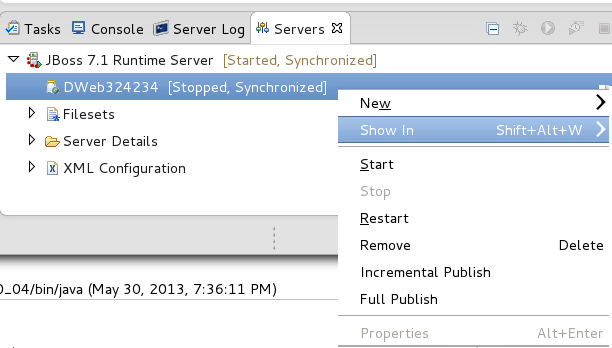

< OpenShift Tools Forge Tools >
Deployment Scanners |
|
|
More control over automatic management of deployment scanners |
In past releases, whenever an application server is started, JBoss Tools automatically adds relevant deployment scanners to your server, so that deployments to custom locations will be picked up by the server without any problems. Depending on your application server version, these scanners may be persisted across future restarts, or may not be. On servers where they are persisted, we also typically remove these scanners, to prevent multiple workspaces using the same server from having collisions or conflicting deployment locations. Some users prefer to manage their deployment scanners on their own, and wish JBoss Tools did not automatically take control of this aspect of their development environment. For these users, two new settings have been added to the server editor which will allow control for this behavior. |
Starting and Stopping Deployed Modules |
|
|
Module Start and Stop re-implemented |
There are two steps to any deployment process. The first is moving a deployable unit over to the server, and the second is letting the server recognize, load, and run the unit. A deployable such as a 'war' file, may be physically placed on a running application server, but may not be 'running'. In this case, depending on what user interface you are looking at, you will get various terms to describe the situation. The JBoss Application Server has no official terminology for a deployable unit that is present but not running. Console output will only indicate that a module is "deployed" when it is both on the server and in the running state, or "undeployed" for when it is not in the running state, regardless of whether the module is physically present on disk. The JBoss Administration Console, on the other hand, will use the terms "Add" or "Remove" to describe the act of physically placing a module inside an application server's directory structure. They will similarly use the terms "Enable" or "Disable" to describe the acts of moving them to the running state, or to the stopped state. Eclipse, and therefore JBossTools, have yet another set of terms. The act of "Adding" or "Removing" a module only indicates how the module is recognized *inside* eclipse. Only a "publish" operation will either add or remove a module to or from a server's physical filesystem. And rather than "enable" or "disable", as the Administrative Console uses, Eclipse chooses "Start" or "Stop" to describe the act of moving a module to a running state, or to a not-running state respectively. Despite these overloaded terms, JBoss Tools is forced to align itself with the terminology of Eclipse WebTools, but chooses behavior that directly maps to that of the Administrative Console. The 'stop' action, when used to stop a running module, can be accessed by right-clicking on a module in the server view and selecting 'stop'. This action will move a deployment from the running state into a non-running state, but will NOT remove the module from the server's directory structure. This behavior mimics the "Enable" action in the Administrative Console web UI. This is in stark contrast to previous behavior, when the 'stop' action would also fully delete the module from the Application Server's directory structure. Similarly, using the 'start' action when right-clicking on a module in the Servers View, will not re-package and publish a project and transfer it to the servers directory structure. Instead, it will ONLY communicate to the server that it should now move the existing module from the stopped state into the running state. There is no loss of functionality, though. Users who were used to the 'restart' action on a module in the Servers View performing all steps including packaging, transfer, and moving the module into the running state, may instead use the long-standing action "Full Publish", which has always been around to ensure a full and clean publish may be had for a fresh and up-to-date deployment.  |